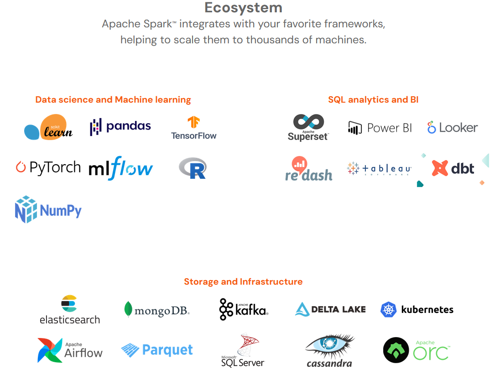

NLP
Week 09
Cloud
Announcements
- Welcome to DATA-599: Cloud Computing!
- Applying Spark.
- HW7, the translation assignment, is due right now.
- HW7 will be to finish the in-class Spark assignment today
- HW8 will be to finish the in-class Spark assignment today
- I think it may seem relatively involved (we'll see)
- I think it may seem relatively involved (we'll see)
Today
- Big Idea: NLP, to sell Spark as the "one stop shop" of cloud computing
- Spark has built in support for most forms of big computation
- Works well under a variety of interfaces
- Docker
- Dataproc
- Colab

Spark boasts of a large eco-system - and it's not wrong!
NLP
— Stat Arb (@quant_arb) July 7, 2024
NLP
Natural Language Processing
- Natural language processing (NLP) is an interdisciplinary subfield of computer science and artificial intelligence.
- It is primarily concerned with providing computers the ability to process data encoded in natural language and is thus closely related to information retrieval, knowledge representation and computational linguistics, a subfield of linguistics.
- Typically data is collected in text corpora, using either rule-based, statistical or neural-based approaches of machine learning and deep learning.
- Major tasks in natural language processing are speech recognition, text classification, natural-language understanding, and natural-language generation.
Also: I wanted to teach an NLP class this term :P
Language
- What does it mean to understand a language?
- "Stop"
- "Turn up"
- "Volume six"
- "Repeat"
- "No"
- "Hello?"
- "When's the flight?"

Language
- What does it mean to understand a language?
- Phonology
- pot [pʰ] vs spot [p]
- Morphology
- pre vs ly vs big
- Lexemes
- ran == run
- Syntax
- Greatest teacher failure is.
- Semantics
- Ram vs ram
- Pragmatics
- Colorless green ideas sleep furiously
- Discourse
- Democratic Party vs
- Democratic People's Republic of Korea vs
- Democratic Republic of the Congo
- Democracy of our own
- Phonology
Syntax
- Syntax concerns the proper ordering of words and its affect on meaning.
- The dog bit the cat.
- The cat bit the dog.
- The dog the cat bit.
- Bit cat dog the the.

- Yoda was the canonical example for years and years before being acquired by The Mouse.
- There is no try.
- Patience you must have.
- Miss them do not.
- Truly wonderful the mind of a a child is.

Semantics
- Semantics concerns the (literal) meaning of words, phrases, and sentences.
- Literally as in "as written"
- Perhaps as "denotation" vs "connotation".
- We can consider e.g. plant:
- "Plant" as a member species of the eurkaryotes that form the taxonomical kingdom Plantae
- "Plant" as a facilty for production, such as a power plant or manufacturing plant.
- "Plant" as a stage of the agricultural process.


:max_bytes(150000):strip_icc():format(webp)/177680720-56a2ad2a3df78cf77278b56e.jpg)
Consider plants and energy production.
Pragmatics
- Well-formed sentences may be meaningless.
- In HTML:
- The famous English example is "Colorless green ideas sleep furiously."
- It was coined by Chomsky in 1957.
- Since then:
- Technologies have become "green"
- Hydrogen is a "colorless green" fuel.
- Desktop computers now sleep, and often operate "furiously" when under high compute loads.
- When I "sleep" my PC after doing distributed computing, it "sleeps furiously".
- Technologies have become "green"
- In HTML:
Ambiguity
- Unsurprisingly a problem with speech recognition.
- "Recognize speech" vs. "wreck a nice beach"
- "Save a wretch like me" vs "Sailorish like me"
- "Alice in Chains" vs "Allison Chance"

Best Friend
- Here's a real thing that actually happened in real life.
- Saweetie features Doja Cat on "Best Friend"
- Saweetie's team pushed music videos transcribing on of Doja's lines as
She off her fish, I said, uh uh don't go there

Best Friend
- Here's a real thing that actually happened in real life.
- The original lyric video also mistranscribed this line, but was taken down.
- The new lyric video has only ~10M vs 300M views! but has the line as:
She off her fifth shot, I said, uh uh don't go there
Best Friend
- Here's a real thing that actually happened in real life.
- Doja Cat has since deleted her Twitter but did weigh in on the controvery:
whoever puttin the lyrics of my verse on bestfriend as "she off her fish" needs to get slapped with a size 10 flip flop my guy
- It's worth noting even the corrected lyrics mistranscibed "mm mm" as "uh uh".
She off her fifth shot, I said, mm mm don't go there
- Doja Cat has since deleted her Twitter but did weigh in on the controvery:
Best Friend
- Here's a real thing that actually happened in real life.
- It's worth noting there were some fairly advanced lyrics in Best Friend.
- Saweetie slant rhymes "bestie" with Tesla
- Saweetie says Doja "looks good(t) with a 't' at the end"
- Doja does wordplay "ain't dumb but she my tweedledee"
- So probably the AIs aren't doing too well on this, but you would expect the Saweetie/Doja team to get the phonology correct!
- It's worth noting there were some fairly advanced lyrics in Best Friend.
See also: Cultural competency
Ambiguity
- Speach recognition
- "Recognize speech" vs. "wreck a nice beach"
- Syntactic analysis.
- "I ate spaghetti with chopsticks."
- "I ate spaghetti with
meatveggieballs." - "I ate spaghetti with Hillary."
- "I ate spaghetti with zeal and fervor."
Case Explosion
- Syntactic Ambiguity compounds rapidly.
- We consider the case of adposition (prepositional) phrases
- The cannonical adposition phrase is:
The quick brown fox jumps over the lazy dog,
- It consists of an adposition ('over') and a noun phrase ('the lazy dog')
- A minimal example would be:
I go to class.
- It consists of an adposition ('to') and a noun phrase ('class')
- 'to' and 'over' are prepositions - prefix operators on noun phrases.
- There also ambipositions and circumpositions...
- Ambi: The term 'notwithstanding' with 'concerns' before or after.
- Circum: 'from * on' supports most time and place noun phrases.
- English has loan inpositions (like '+') such as magna cum laude.
- Dubiously non-standard English via prepospition stranding has postpositions.
I don't know where from.
- The cannonical adposition phrase is:
Case Explosion
- Syntactic Ambiguity compounds rapidly.
- We consider the case of adposition (prepositional) phrases
- The cannonical adposition phrase is:
The quick brown fox jumps over the lazy dog,
- It consists of an adposition ('over') and a noun phrase ('the lazy dog')
- A minimal example would be:
I go to class.
- It consists of an adposition ('to') and a noun phrase ('class')
- 'to' and 'over' are prepositions - prefix operators on noun phrases.
- There also ambipositions and circumpositions...
- Ambi: The term 'notwithstanding' with 'concerns' before or after.
- Circum: 'from * on' supports most time and place noun phrases.
- English has loan inpositions (like '+') such as magna cum laude.
- Dubiously non-standard English via prepospition stranding has postpositions.
I don't know where from.
- The cannonical adposition phrase is:
Case Explosion
- Syntactic Ambiguity compounds rapidly.
I saw the satellite with the telescope.
- I use *ML to denote the two meanings:
|
|
Case Explosion
- Syntactic Ambiguity compounds rapidly.
- Adposition phrase binding drives case explosion along Catalan numbers.
- 002: I saw the satellite with the telescope.
- 005: I saw the satellite with the telescope made by NASA.
- 014: I saw the satellite with the telescope made by NASA on the space coast.
- 042: I saw the satellite with the telescope made by NASA on the space coast overnight.
- 132: I saw the satellite with the telescope made by NASA on the space coast overnight last year.
Amtrak serves the space coast by the way.
Case Explosion
- Syntactic Ambiguity compounds rapidly.
- Adposition phrase binding drives case explosion along Catalan numbers.
- The Catalan's aren't too bad, they count recursively defined objects (like sentences with unbound adpositions).

- Easiest for me is
def fact(n): return n * fact(n-1) if n > 1 else 1 def catalan(n): return fact(2 * n) // (fact(n + 1) * fact(n)) - Check them out:
>>> {n:catalan(n) for n in range(1,11)} {1: 1, 2: 2, 3: 5, 4: 14, 5: 42, 6: 132, 7: 429, 8: 1430, 9: 4862, 10: 16796}
Takeaway: Growth is extremely exponential (closer to nn than 2n)
Ambiguity
- Speach recognition
- "Recognize speech" vs. "wreck a nice beach"
- Syntactic analysis.
- "I saw the satellite with the telescope."
- Semantic analysis
- "The bull is in the pen." vs. "The ink is in the pen."
Semantics
- Semantic ambiguity leads to what I lovingly refer to as "bad jokes".
- A: "We are looking for a thief with a bicycle."
- B: "Wouldn't it be better using your eyes."
- Can also lead to actual confusion.
- "Our house is in a row."
- "We have a row house."
- "Our legislative branch is having an internal dispute."
- "Our house is in a row."
- Comes up in teaching programming
- "While you are at the store, buy some kombucha" is an infinite loop:
def request(): while at_store(): buch = buch + 1
- "While you are at the store, buy some kombucha" is an infinite loop:
Ambiguity
- Speach recognition
- "Recognize speech" vs. "wreck a nice beach"
- Syntactic analysis.
- "I saw the satellite with the telescope."
- Semantic analysis
- "The bull is in the pen." vs. "The ink is in the pen."
- Pragmatic analysis (this is not even remotely a true story)
- STUDENT: "Is this homework on the Sapir-Whorf Hypothesis for a grade."
- ME: "It is ungraded."
- <Student graduates>
- STUDENT: "Prof I can't get hired because I don't study the Sapir-Whorf Hypothesis."
- ME: "I use ungrading which because I believe supports better learning outcomes, not because you shouldn't study."
Ambiguity
- Speach recognition
- Why is Language Ambiguous?
- Unique expressions would be large and difficult to communicate.
- Most arrangements convey no useful meaning.
- Resolvable ambiguity compresses information/data.
- Language is "naturally occuring" and ambiguity emerged incidentally.
- Sometimes this leads to problems. Oh well.
- For computers, it leads to big problems.
NLP tasks
- NLP mostly does three things
- Syntax
- Word segmentation
- Morphological analysis
- Part-of-speech tagging
- Phrase chunking
- Syntactic Parsing
- Semantics
- Word Sense Disambiguation (WSD)
- Semantic Role Labeling (SRL)
- Semantic parsing
- Textual entailment
- Pragmatics
- Co-reference
- Information Extraction (IE)
- Question answering
- Text summarization
- Chatbots
- Machine Translation
- Syntax
Word Segmentation
- Breaking a string of characters into a sequence of words.
- In some written languages (e.g. Chinese) words are not separated by spaces.
- Even in English, characters other than white-space can be used to separate words [e.g. , ; . - : ( ) ]
- Examples from English URLs:
- jumptheshark.com -> jump the shark .com
- myspace.com/pluckerswingbar -> myspace .com pluckers wing bar
- myspace.com/pluckerswingbar -> myspace .com plucker swing bar
- A personal favorite: The Freakybuttrue Peculiarium and Museum

- I parsed as "Freaky but true"
- A colleague parsed as "Freaky butt rue"
- Hilarity ensued, etc. (I was correct we checked).
Morphological Analysis
- A morpheme is the smallest linguistic unit that has semantic meaning
- e.g. “carry”, “pre”, “ed”, “ly”, “s”
- Morphological analysis is the task of segmenting a word into its morphemes:
- carried -> carry + ed (past tense)
- independently -> in + (depend + ent) + ly
- Googlers -> (Google + er) + s (plural)
- unlockable -?> un + (lock + able) : (un + lock) + able
- In English: words are not atomic.
Part Of Speech (POS) Tagging
- Annotate each word in a sentence with a part-of-speech.
- Useful for subsequent syntactic parsing and word sense disambiguation.
| I | ate | the | spaghetti | with | meatballs. |
| Pro | V | Det | N | Prep | N |
| John | saw | the | saw | and | decided | to | take | it | to | the | table. |
| PN | V | Det | N | Con | V | Part | V | Pro | Prep | Det | N |
We've seen this one before, of course.
Phrase Chunking
- Find all non-recursive noun phrases (NPs) and verb phrases (VPs) in a sentence.
- Not just done in natural languages!
- Done with HTML!
- A 'non-recursive phrase' is textual content with no internal HTML elements.
- [NP I] [VP ate] [NP the spaghetti] [PP with] [NP meatballs.]
- [NP He] [VP reckons] [NP the current account deficit] [VP will narrow] [PP to] [NP only # 1.8 billion] [PP in] [NP September]
Syntactic Parsing
- Produce the correct syntactic parse tree for a sentence.

NLP tasks
- NLP mostly does three things
- Syntax
- Word segmentation
- Morphological analysis
- Part-of-speech tagging
- Phrase chunking
- Syntactic Parsing
- Syntax
- Semantics
- Word Sense Disambiguation (WSD)
- Semantic Role Labeling (SRL)
- Semantic parsing
- Textual entailment
- Pragmatics
- Co-reference
- Information Extraction (IE)
- Question answering
- Text summarization
- Chatbots
- Machine Translation
Word Sense Disambiguation (WSD)
- Words in natural language usually have a fair number of different possible meanings.
- We may have a lot of interest in computational linguistics.
- We may have a lot of interest on a debt of some kind.
- For many tasks (question answering, translation), the proper sense of each ambiguous word in a sentence must be determined.
Semantic Role Labeling (SRL)
- For each clause, determine the semantic role played by each noun phrase that is an argument to the verb.
- agent patient source destination instrument
- John drove Mary from Austin to Dallas in his Toyota Prius.
- The hammer broke the window.
- Also referred to a “case role analysis,” “thematic analysis,” and “shallow semantic parsing”
Semantic Parsing
- A semantic parser maps a natural-language sentence to a complete, detailed semantic representation (logical form).
- For many applications, the desired output is immediately executable by another program.
- Example: Mapping an English database query to Prolog:
- How many cities are there in the US?
answer(A,
count(B,
(city(B),
loc(B, C),
const(C, countryid(USA))),
A))
I don't know Prolog, I just hear this is correct.
Textual Entailment
- Determine whether one natural language sentence entails (implies) another under an ordinary interpretation.
- E.g., “US Womens are playing in the world cup. -> Some women are playing a sport.”
Pragmatics/Discourse Tasks
- Anaphora Resolution/Co-Reference
- Determine which phrases in a document refer to the same underlying entity.
- I put the carrot on the plate and ate it.
- Did I eat the plate?
- Biden supports Netanyahu. But the head of government cannot act without the legislature.
- Who is the head of government?
- Some cases require difficult reasoning, a famous example:
- Today was Jack's birthday. Penny and Janet went to the store. They were going to get presents. Janet decided to get a kite. "Don't do that," said Penny. "Jack has a kite. He will make you take it back."
Really hard when moving across domans e.g. ask synthetic chemists about experiments.
NLP tasks
- NLP mostly does three things
- Syntax
- Word segmentation
- Morphological analysis
- Part-of-speech tagging
- Phrase chunking
- Syntactic Parsing
- Syntax
Semantics- Word Sense Disambiguation (WSD)
- Semantic Role Labeling (SRL)
- Semantic parsing
- Textual entailment
- Pragmatics
- Co-reference
- Information Extraction (IE)
- Question answering
- Text summarization
- Chatbots
- Machine Translation
Information Extraction (IE)
- Identify phrases in language that refer to specific types of entities and relations in text.
- Named entity recognition is the task of identifying names of people, places, organizations, etc. in text.
- people, organizations, places
- Michael Dell is the CEO of Dell Computer Corporation and lives in Austin, Texas.
- Relation extraction identifies specific relations between entities.
- Michael Dell is the CEO of Dell Computer Corporation and lives in Austin, Texas.
- Michael Dell is the CEO of Dell Computer Corporation and lives in Austin, Texas.
Is Dell from Texas?
Question Answering
- Directly answer natural language questions based on information presented in a corpora of textual documents (e.g., the web).
- Who is the prime minister of Great Britain?
- Keir Starmer
- Who is the president of France?
- Wouldn't we all like to know. (I wasn't good enough at NLP to figure this out)
- Who is the prime minister of Great Britain?
Text Summarization
- Produce a short summary of one or many longer document(s).
- Article:
On 9 June 2024, following the results of the 2024 European Parliament elections in which his centrist grouping received only 14.6% of the votes, finishing nearly 17 points behind Le Pen's RN party, Macron unexpectedly dissolved the National Assembly and called for an early legislative election to be held on 30 June and 7 July 2024.[303] In the first round of the election, on 30 June, Macron's grouping received only 20.04% of the votes nationwide, placing third well behind the hard-right RN (33.15%) and the left-wing NFP alliance (27.99%), which constituted the worst electoral performance for a governing coalition in a general election since the start of the modern French Republic in 1870.[304] Exit polls released shortly after 8pm on 30 June suggested the RN-led alliance was on course to win either a plurality of seats or an outright majority in the second round, while Macron's coalition was set to lose at least half of the seats it won in 2022.[305] In the second round, on 7 July, Macron was handed another hung parliament with the left-wing coalition unexpectedly winning a plurality of seats though 90 to 100 seats short of an overall majority, leaving the left theoretically unable to form a government on its own. Macron's grouping lost both 86 seats and its status as the largest parliamentary bloc while the RN-led alliance, though dramatically underperforming the polls, still managed to make significant gains, eventually becoming the largest single party in the new National Assembly. The results presented unprecedented potential for political crisis and parliamentary gridlock.[306] 17th National Assembly of France, elected in 2024. Shortly after exit polls were released on the night of 7 July, Macron's Prime Minister, Gabriel Attal, announced he would tender his resignation to the President. The following day, Macron refused Attal's resignation, instead asking him to stay on until a new government can be formed.
Spoken Dialogue Systems -- Chatbots
- By the way all slides were generated by ChatGPT today
- I did feed it a slide deck from Cornell first though, which is mostly understood
- I had to fix a lot.
Machine Translation
- I asked ChatGPT to translate the Catalan function to R
- Looks good to me.
fact <- function(n) {
if (n > 1) {
return(n * fact(n - 1))
} else {
return(1)
}
}
catalan <- function(n) {
return(fact(2 * n) / (fact(n + 1) * fact(n)))
}
Ambiguity for Translation
- An apocryphal story is that an early MT system gave the following results when translating from English to Russian and then back to English:
- “The spirit is willing but the flesh is weak.” -> “The liquor is good but the meat is spoiled.”
- “Out of sight, out of mind.” -> “Invisible idiot.”
NLP tasks
- NLP mostly does three things
- Syntax
- Word segmentation
- Morphological analysis
- Part-of-speech tagging
- Phrase chunking
- Syntactic Parsing
- Semantics
- Word Sense Disambiguation (WSD)
- Semantic Role Labeling (SRL)
- Semantic parsing
- Textual entailment
- Pragmatics
- Co-reference
- Information Extraction (IE)
- Question answering
- Text summarization
- Chatbots
- Machine Translation
- Syntax
Sapir-Whorf
Week 09
Cloud
Sapir-Whorf
- Strong vs. Weak
- Láadan and Butler
- Scientific Method
Strong form
-
The strong form of the Sapir-Whorf hypothesis is linguistic determinism
- Language determines thought
- Linguistic categories limit and shape cognitive processes
- Speakers of different languages perceive and conceptualize the world differently based on the linguistic structures available to them.
- Language not only influences but also determines how individuals think and perceive reality.
Generally regarded as disproven (I disagree but am in a minority).
Weak form
-
The weak form of the Sapir-Whorf hypothesis is linguistic relativity
- Language influences but does not determine thought
- Language influences the ways in which individuals perceive and categorize experiences.
- This perspective allows for cognitive universals across languages
- This acknowledges that language can affect thinking patterns and cognitive processes.
Generally regarded as proven, as least as usually defined.
Weak Example
- A new bridge in 2004:
When the Viaduct de Millau opened in the south of France in 2004, this tallest bridge in the world won worldwide accolades. German newspapers described how it "floated above the clouds" with "elegance and lightness" and "breathtaking" beauty. In France, papers praised the "immense" "concrete giant." Was it mere coincidence that the Germans saw beauty where the French saw heft and power? Lera Boroditsky thinks not.
- Newsweek claims:
In German, the noun for bridge, Brücke, is feminine. In French, pont is masculine. German speakers saw prototypically female features; French speakers, masculine ones.
- Read more.
Language Láadan
- Láadan is a constructed language created by linguist Suzette Haden Elgin in 1982.
- It was designed specifically to explore the Sapir-Whorf hypothesis, particularly its feminist implications.
-
Key Features:
- Feminist Linguistics: Láadan was developed with the intention of expressing the experiences and perspectives of women more fully than natural languages do, reflecting a feminist critique of linguistic and cultural norms.
- Emphasis on Emotions: Láadan includes words and grammatical structures that emphasize emotional expression and communication, which are sometimes considered more nuanced than in natural languages.
- According to Elgin, this is designed to counter male-centered language's limitations on women, who are forced to respond "I know I said that, but I meant this".
Language Láadan
-
Read Suzette Hadan Elgin on Láadan here.
Nevertheless, there's a theory that women are distressed because existing human languages are inadequate to express their perceptions; if that theory has any validity, it would seem that women would welcome a language that better served that purpose.
Judith Butler
- Judith Butler, a philosopher and gender theorist, introduced the concept of gender performativity in their work "Gender Trouble" (1990).
- Gender is not an inherent or static identity but rather a social and linguistic construct that is performed and reiterated through language and other social practices.
-
Key Aspects:
- Performativity: Butler argues that gender is enacted and performed repeatedly through speech acts, gestures, and other everyday actions. These performances create and reinforce gender identities within social contexts.
- Language as Constitutive: Language plays a crucial role in the construction of gender identities by prescribing and regulating norms of speech, behavior, and appearance that are associated with specific genders.
- Critique of Essentialism: Butler's theory challenges essentialist views of gender, which posit that gender identities are natural or biologically determined. Instead, they argues for understanding gender as a dynamic and contingent product of social interactions and linguistic practices.
- When ChatGPT formatted these slides from text to HTML, it changed Butler's pronouns (I corrected them back I hope).
- My takeaway: Language constructs gender, a minimum in part.
Janelle Monae
- Back on my music video nonsense.
- In 2018, Janelle Monae (famously, free-ass motherf—, they/them, her/she) released "Screwed" and was wearing a top adorned with "Subject Not Object"

- Talking about subject/object and pronouns at the same time is very interesting. Why?
- My training: binary gendered personal pronouns are:
- Masculine: He/him/his
- Feminine: She/her/hers
- The only problem is those aren't actually equivalent in English.
Subject not Object
- My training: binary gendered personal pronouns are:
- Masculine: He/him/his
- Feminine: She/her/hers
- Actual (order change):
- Feminine: She/her/her/hers
- Masculine: He/him/his/his
- Consider:
- She ran / He ran
- I saw her / I saw him
- I know her name / I know his name
- That is hers / That is his
SparkNLP
- Don't take my word for it, ask SparkNLP.
['ShePRP ranVBD', 'HePRP ranVBD', 'IPRP sawVBD herPRP$', 'IPRP sawVBD himPRP', 'IPRP knowVBP herPRP nameNN', 'IPRP knowVBP hisPRP$ nameNN', 'ThatDT isVBZ hersNNS', 'ThatDT isVBZ hisPRP$'] - herPRP$ != herPRP.
- These are contrived examples so there's a lot of noise.
- SparkNLP failed to differentiate the two 'his' cases, and to parse 'her/him' as the same part of speech.
- I... did not expect it to struggle here!
PRP Personal pronoun
PRP$ Possessive pronoun
Scientific Method
- I don't remember how to do science but Wikipedia says to do this:
- Define a question
- Gather information and resources (observe)
- Form an explanatory hypothesis
- Test the hypothesis by performing an experiment and collecting data in a reproducible manner
- Analyze the data
Scientific Method
- I would like to know:
- In a given corpus, is there a statistically significant difference between subject and object frequencies for feminine and masculine personal pronouns?
- Bonus: Does the distribution of genders within the corpus authors meaningful impact this result?
- Prepare a report.md that contains:
- An introduction section, explaining how you formulate the problem.
- A methodology section, explaining your datasets and your technologies (SparkNLP, most likely)
- Your hypothesis, its own section.
- An evaluation section, outlining how you conducted your test, reproducibly
- It must contain actionable source code.
- It must contain at least one embedded data visualization.
- A conclusion section.
- Make a slide deck of 5 slides to present your findings. ppt or HTML
- Pairs okay.
- Work time on SparkNLP rest of today (probably not too long)
- Work time on SparkNLP 6 PM - 8 PM next week
- Workshopping writing / science / presentations second half of next week (I'll have a demo).
- Goal: Lightning talks 6 PM - 7:30 PM week of 29 Jul (2 weeks)
- My goal: Give you time to meaningfully use these tools that isn't after 8 PM, a chance to talk about them.
SparkNLP
Week 09
Cloud
Setting up SparkNLP
- First we use curl's best friend, wget, to grab the SparkNLP install script.
- Original file is located at https://colab.research.google.com/drive/1n5esx7DfKr1PNoLXxyrS4BjNXnQshu4k
- In colab, we use the '!' (say: 'bang') prefix to run bash commands.
- Then in a latter cell we can import sparknlp and start a spark session.
import sparknlp spark = sparknlp.start() - I also import a pipeline to do the pos tagging.
from sparknlp.pretrained import PretrainedPipeline
!wget http://setup.johnsnowlabs.com/colab.sh -O - | bash
Analyzing 'Headlines' with SparkNLP
- Last week I used headlines, today I just put in my sample sentences.
hls = [ "She ran", "He ran", "I saw her", "I saw him", "I know her name", "I know his name", "That is hers", "That is his" ]- Let's use SparkNLP to analyze these headlines:
# Use list comprehension to annotate headlines dfs = [pipeline.annotate(hl) for hl in hls]- There's a variety of techniques to examine a dataframe. See what you're working with!
"with" as a "postposition"
Fusing Part-of-Speech Tags
- Extract words (tokens) and parts-of-speech:
- Fuse part-of-speech tags to words:
tok_tag = [(df['token'], df['pos']) for df in dfs]
zips = [list(zip(tt[0], tt[1])) for tt in tok_tag]
What does 'zip' do? Is it the right tool here? Do you know a pandas/dplyr alternative?
Analyzing eBooks with Spark
- Let's analyze an eBook:
!curl "https://raw.githubusercontent.com/cd-public/books/main/pg1342.txt" -o austen.txt- Read in the eBook:
- Annotate (part of) the eBook:
# whole thing will be slow - probably better in Dataproc. pipeline.annotate(austen[:100])['pos']
austen = open('austen.txt').read()
Word Count with Spark
- Count words in the eBook:
# Import SparkSession - this is no longer SparkNLP btw from pyspark.sql import SparkSession- Create Spark session
spark = SparkSession.builder.appName("demo").getOrCreate() - Count words:
counts = ( # its map reduce folks austen.flatMap(lambda line: line.split(" ")) .map(lambda word: (word, 1)) .reduceByKey(lambda a, b: a + b) ) - Display first 10 word counts:
counts.collect()[:10]
HW/Project, again
- I would like to know:
- In a given corpus, is there a statistically significant difference between subject and object frequencies for feminine and masculine personal pronouns?
- Bonus: Does the distribution of genders within the corpus authors meaningful impact this result?
- Prepare a report.md that contains:
- An introduction section, explaining how you formulate the problem.
- A methodology section, explaining your datasets and your technologies (SparkNLP, most likely)
- Your hypothesis, its own section.
- An evaluation section, outlining how you conducted your test, reproducibly
- It must contain actionable source code.
- It must contain at least one embedded data visualization.
- A conclusion section.
- Make a slide deck of 5 slides to present your findings. ppt or HTML
- Pairs okay.
- Work time on SparkNLP rest of today (probably not too long)
- Work time on SparkNLP 6 PM - 8 PM next week
- Workshopping writing / science / presentations second half of next week (I'll have a demo).
- Goal: Lightning talks 6 PM - 7:30 PM week of 29 Jul (2 weeks)
- My goal: Give you time to meaningfully use these tools that isn't after 8 PM, a chance to talk about them.